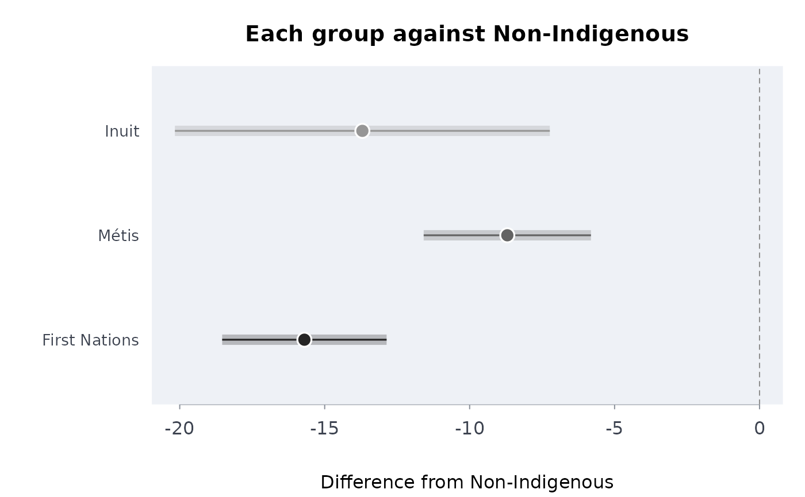
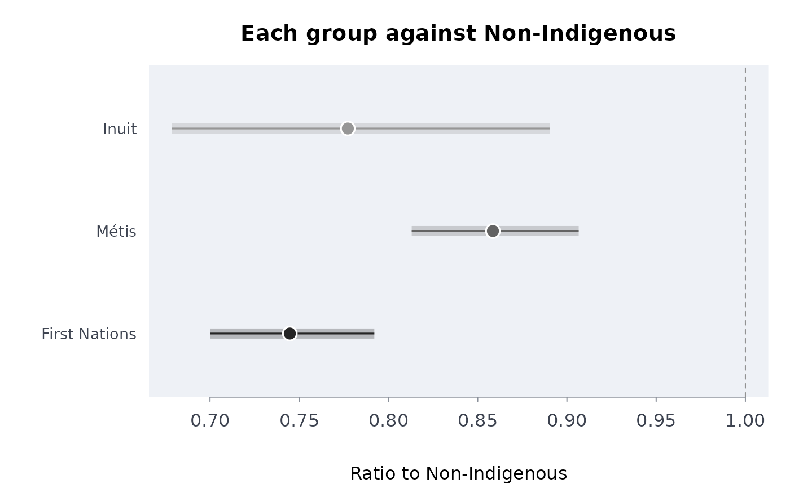

For published estimates with their confidence limits (percentages, rates, years of life expectancy: any scale, with the limits on the same scale), the ratio and the difference of each group to a reference group, with confidence intervals worked from the published ones: First Nations, Metis and Inuit against non-Indigenous people, Aboriginal and Torres Strait Islander people against non-Indigenous Australians, Maori against non-Maori, or any groups with published intervals.
Usage
indgap(
data,
grp,
est,
lower,
upper,
ref = "Non-Indigenous",
qual = NULL,
conflvl = 0.95,
pooled = NULL
)Arguments
- data
A data frame, one row per group (filtered to one period, age group, sex and place: a group appearing twice is refused).
- grp, est, lower, upper
Column names: the group label, the estimate, and its published confidence limits, on one scale.
- ref
The label of the reference group (default
"Non-Indigenous").- qual
Optional column of quality flags in the package's vocabulary (
"E","F","x","..","..."; seeqltyrcdfor other agencies' flags).- conflvl
The confidence level of the published intervals and of the ones returned (default 0.95).
- pooled
Optional labels of the rows that pool other groups (for example
"Aboriginal and Torres Strait Islander"beside its parts, or a "Total Indigenous" row); by default the labels described in Details.
Value
A data frame of class rmbl_indigenous_gap, one row per group but the
reference: group, estimate, refest, ratio,
ratiolo, ratioup, difference, diflo,
difup, usewithcau and poogrp; attributes
reference and conflvl. plot() draws each group's difference
or ratio.
Details
Each published interval gives a standard error, \(s = (u - l) / (2 z)\), on
the scale of the estimate for the difference and on the log scale,
\(\sigma = (\log u - \log l) / (2 z)\), for the ratio, with
\(z = \Phi^{-1}(1 - \alpha/2)\). This takes the interval as symmetric on that scale;
for asymmetric (gamma, logit, Wilson) limits it averages the two sides. With a standard
error, a coefficient of variation or a margin of error instead of limits, make limits
with limfrom first. The groups are treated as independent samples, so
the standard error of a difference is \(\sqrt{s_g^2 + s_r^2}\) and of a log ratio
\(\sqrt{\sigma_g^2 + \sigma_r^2}\). Disjoint domains of one survey are nearly
independent but not exactly (they share the design's strata and clusters): the
intervals are approximations, and the exact ones need the survey's replicate weights
(for Statistics Canada's surveys, in its Research Data Centres). The reference must not
contain the groups: compare with non-Indigenous people, not with a total, whose
covariance with each group is large and positive (the function warns when the reference
looks like a total). A lower limit of 0 (a limit cut at zero) leaves the ratio's
interval NA.
Distinctions-based: each group is compared on its own. A row that pools groups is kept
but marked poogrp = TRUE, since a pooled figure can hide what differs
between the groups it pools: name such rows in pooled (by default labels
beginning "Total", "Indigenous identity", "Aboriginal identity" or "Indigenous
population" are taken as pooled). A row flagged E (in the group or the
reference) is compared and marked; one flagged F, x, .. or
..., with no estimate, or whose published interval does not contain its own
estimate, is not compared. Other agencies' flags: qltyrcd.
References
Statistics Canada (2025). Health indicators for First Nations adults living off reserve, Metis and Inuit adults, 2015 to 2022. The Daily, 2025-02-13. https://www150.statcan.gc.ca/n1/daily-quotidien/250213/dq250213f-eng.htm
Carroll SR, Garba I, Figueroa-Rodriguez OL, et al. (2020). The CARE Principles for Indigenous Data Governance. Data Science Journal 19:43. doi:10.5334/dsj-2020-043
Examples
# Perceived mental health very good or excellent, adults, 2019/2022 (Statistics Canada,
# table 13-10-0924-01; The Daily, 2025-02-13)
h <- indiex("health")
mh <- h[h$period == "2019/2022" & h$age == "Total, 18 years and over" &
h$indicator == "Perceived mental health, very good or excellent", ]
g <- indgap(mh, "group", "estimate", "lower", "upper", qual = "quality")
g
#> group estimate refest ratio ratiolo ratioup difference
#> 1 First Nations 45.8 61.5 0.7447154 0.7001926 0.7920694 -15.7
#> 2 Métis 52.8 61.5 0.8585366 0.8130217 0.9065995 -8.7
#> 3 Inuit 47.8 61.5 0.7772358 0.6785276 0.8903034 -13.7
#> diflo difup usewithcau poogrp
#> 1 -18.53593 -12.864070 FALSE FALSE
#> 2 -11.58531 -5.814692 FALSE FALSE
#> 3 -20.16568 -7.234321 FALSE FALSE
plot(g)

plot(g, what = "ratio")

# your own table: made-up numbers in another country's layout, with relative standard
# errors instead of limits and that agency's flags
own <- data.frame(group = c("Aboriginal", "Torres Strait Islander",
"Aboriginal and Torres Strait Islander",
"Non-Indigenous Australians"),
pct = c(31.2, 27.5, 30.8, 18.9), rse = c(4.1, 22.0, 3.9, 1.2),
flag = c("", "*", "", ""))
own <- cbind(own, limfrom(own$pct, cv = own$rse)[c("lower", "upper")])
own$q <- qltyrcd(own$flag, suppr = c("np", "**"), caution = "*")
indgap(own, "group", "pct", "lower", "upper",
ref = "Non-Indigenous Australians",
qual = "q", pooled = "Aboriginal and Torres Strait Islander")
#> group estimate refest ratio ratiolo
#> 1 Aboriginal 31.2 18.9 1.650794 1.5179467
#> 2 Torres Strait Islander 27.5 18.9 1.455026 0.9167364
#> 3 Aboriginal and Torres Strait Islander 30.8 18.9 1.629630 1.5041584
#> ratioup difference diflo difup usewithcau poogrp
#> 1 1.795267 12.3 9.753713 14.84629 FALSE FALSE
#> 2 2.309390 8.6 -3.266111 20.46611 TRUE FALSE
#> 3 1.765567 11.9 9.504094 14.29591 FALSE TRUE